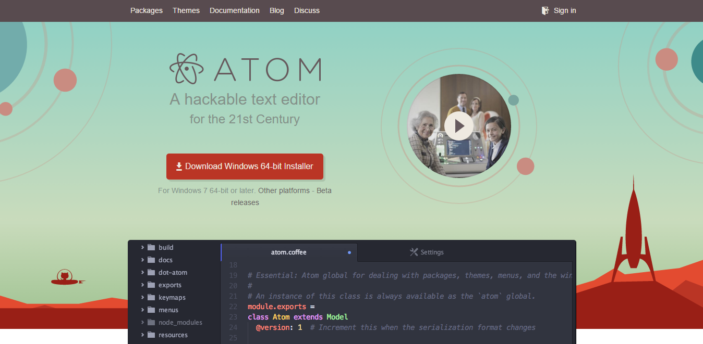
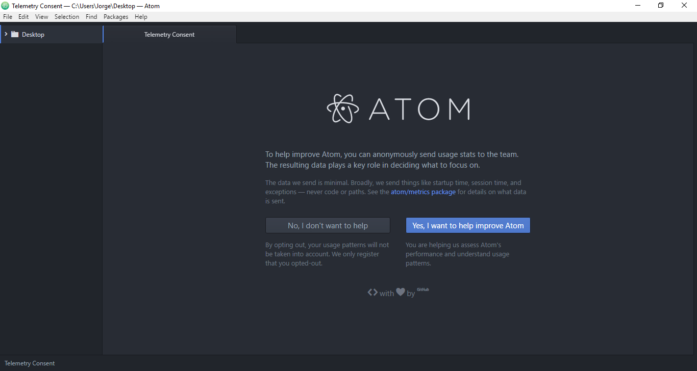

Atom
Atom es un editor de código fuente para macOS, Linux y Windows con soporte para plug-ins escrito en Node.js, Incrustando el control de versiones Git y desarrollado por GitHub. Es una aplicación de escritorio construida utilizando tecnologías web.
Instalación de Atom en Windows 10
Para instalar Atom debemos acceder a la página principal de Atom y descargar el instalador para windows

Una vez se haya descargado abrimos el ejecutable y comenzará la instalación automáticamente.
Entorno de desarrollo de Atom
Una vez finalice la instalación automática se desplegará el entorno de desarrollo de Atom el cual es similar a este:
